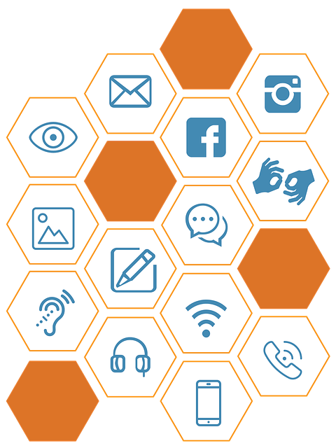

Internett har i dag blitt en stor del av hverdagen, og er utbredt over hele verden. Med bare få tasteklikk blir man sendt ut i et hav av informasjon.
Uansett hva du lurer på, er du garanter å finne noe om det på nettet. Ved å skrive inn stikkord eller en setning, dukker det opp utallige søkertreff.
Hva bestemmer rekkefølgen på søkertreffene, og hvordan kan det gjøres tilgjengelig for alle?
Søkemotoroptimalisering
Som nevnt tidligere eksisterer det utallige nettsider, mange med ganske likt innhold.
Hvordan skal du klare å konkurrere med disse sidene for å få akkurat din side på toppen? Løsningen er å ha god SEO.
SEO kommer fra det engelske uttrykket «Search Engine Optimization», og blir oversatt til søkermotoroptimalisering (Moodgruppen, u.å.).
God SEO oppnår man ved å tilpasse seg søkemotorens retningslinjer (Høgskolen i Østfold, 2022a). Disse retningslinjene endrer seg ofte og krever derfor mye jobb å opprettholde.
Algoritmen til søkemotoren endrer seg også fra dag til dag. På grunn av de millionene av nettsidene lagt ut, vil det å få gode resultater ved hjelp av SEO ta tid.
I tillegg vil det alltid være stor konkurranse. Nytt innhold blir publisert og konkurrenter vil arbeide god for å ligge på toppen.
Søkemotorer som Google og Bing, rangerer nettsider basert på ulike faktorer. Dette gjelder faktorer “på” siden, og “utenfor” siden. For å komme seg lengre opp på listen må man følge disse faktorene på best mulig måte.
Faktorer “på” siden er innhold, arkitektur og HTML. Faktorer “utenfor” siden er tillit, linker, lokalitet og sosialt.
Når man er inne på temaet SEO, er det naturlig å nevne SEM. Tidligere har jeg skrevet at man bare kan komme høyere på rangen dersom man forbedrer SEO, men det finne et annet alternativ.
SEM (Search Engine Marketing) er den kostnadsbaserte delen av SEO. På toppen av rangeringen i søkemotoren ligger det betalte annonser. Dette er altså betalt systematisering.
Utseendemessig ligner en SEM mye på en vanlig SEO. Den eneste forskjellen er ordet ”annonse” som står skrevet over tittelen. SEM vil altså være mer lønnsomt enn SEO dersom man kun ser på rangering og ikke tar hensyn til de ekstra omkostningene plasseringen vil medføre.
Hvordan oppnå god SEO?
I denne delen av artikkelen vil jeg ta for meg noen viktige faktorer man kan se på for å forbedre SEO. Det første vi ser på er hvordan Crawleren som besøker din nettside (Shirey, u.å.) som besøker din nettside.
En av de tingene en Crawler ser på er innhold på nettsiden (Høgskolen i Østfold, 2022a). Innholdet må ha god kvalitet og samsvare med søketreffet.
Korrekte titler og god bruk av headere er også noe en Crawler vil se på. Det er derfor viktig å gi navn som er logiske for søkemotoren. Nettsiden må i tillegg skille godt mellom innhold,
design og funksjonalitet og ha en bra struktur. Dersom man følger dette blir siden tilgjengelig og lettere for en Crawler å indeksere (Dalsaune, 2022).
For å lage god struktur av en side, tar man i bruk semantiske tagger. Semantiske tagger kan være header, nav, Main og footer.
Disse taggene i samspill med innhold, forteller oss hva siden handler om. Ved å legge til andre tagger som breadcrumbs gjør man det lettere for brukeren å vite hvor han befinner seg,
og det blir også lettere å navigere rundt på siden. Denne taggen gir i tillegg en enkel vei tilbake til andre sider.
Dersom man er flink til å legge ved gode nøkkelord på nettsiden, vil det føre til at siden tiltrekker seg målrettet trafikk.
I noen tilfeller vil disse besøkende ende opp som kunder. Folk søker sjeldent på spesifikke selskaper for å se hva de tilbyr, de søker som oftest etter noe de ønsker og de selskapene som tilbyr dette dukker opp.
De fleste som søker benytter seg av nøkkelord eller enkle setninger.
Det er viktig at Crawler kan lese indeksene på nettsiden. Dette for å kunne gjøre jobben sin på en så god måte som mulig.
For å sjekke indeksen finnes det ulike verktøy man kan benytte. Dersom siden ikke er indeksert, er det viktig å bruke ulike addme-tjenester for å få andre til å linke til siden.
I tillegg kan man bruke Search Console (tidligere kjent som Google Webmaster Tools) for å legge nettsiden til indeksering.
Oppdateringsfrekvensen til nettsiden vil også avgjøre hvor ofte Crawleren besøker siden. Dette er med på å avgjøre hvor viktig og «fresh» siden er.
Dersom det er for lenge mellom hver gang siden blir oppdatert, blir den sett på som «død».
Det er ikke bare viktig å beskrive det tekstlige innholdet, men også figurene. Derfor må man huske å legge til gode beskrivelser til for eksempel bilder.
Gode nøkkelord eller søkeord er mulig å finne via ulike verktøy. Slik vet brukeren hva siden handler om og hva figuren avbilder.
Det er også viktig å legge merke til hvilke nøkkelord konkurrentene bruker.
Noe annet som hjelper nettsiden med å oppnå god SEO er authority.
God site authority betyr at søkemotoren ser på hver side på en nettområdet som viktig. Dette gjelder også nøkkelordene og temaene.
Det er derfor viktig å linke til alle sidene hver for seg slik at man forenkler indekseringen av nettområdet, og gjør det mulig å nå alle sidene med få hopp.
Eksterne lenker er en av de viktigste delene av SEO. De er blant annet med på å gi større autoritet.
Vi lever i en verden der sosiale medier er godt forankret i dagliglivet og det er derfor viktig at nettområdet er både sosialt tilknyttet og har et godt rykte.
Veldig mange brukere av sosiale medier handler ut fra venners og andre mediers anbefalinger. Det er derfor viktig med inngående lenker.
Dette kan oppnås ved at man blant annet bør være flink til å aktivt legge ved lenke til egen side når man bruker sosiale medier.
Derimot kan det påvirke din SEO negativt om en «dårlig» side velger å linke til din side.
Dersom man velger å jukse i semantikken ved å bruke for eksempel feil søkeord for å rangeres høyere av søkemotoren, blir nettsiden utvist.
Dette gjelder også ved duplisering. Velger du å kopiere andres innhold medfører dette dårlig rangering av din side.
Om ditt innhold ikke dukker opp først ved indeksering, blir det sett på som en sekundær kilde.
Kort oppsumert handler søkemotoroptimalisering om å gjøre nettsiden attraktiv for søkemotoren og besøkende.
Det er en kontinuerlig jobb som krever mye kunnskap og høyt tidsforbruk. I tillegg må SEO gjøres på nytt hver gang man legger inn nytt innhold på nettsiden.
Universell Utforming

Et viktig emne i dagens samfunn er likestilling. Dette gjelder ikke bare mellom mennesker, men også på nettet.
For å oppnå dette tar utviklere i bruk noe som kalles UU (Akerbæk, 2022).
UU er en forkortelse for Universell Utforming. Som ordet sier, handler det om å likestille tilgjengeligheten for alle brukere av en nettside.
Det er tross alt en menneskerett å ha mulighet til å delta i samfunnet, selv når samfunnet blir mer digitalt. Målet med UU er å gjøre det enkelt for flest mulig å orienter og bevege seg inne på en nettside (Bufdir, u.å.).
Med UU kan mennesker med ulik grad av funksjonsevnenedsettelse føle seg inkludert. Det å kunne delta aktivt i samfunnet er svært viktig for de fleste.
UU er ikke bare lovpålagt, men er også lønnsomt for blant annet salgssider. Dersom nettsiden ikke er tilgjengelig for alle, vil siden selge dårligere og butikken vil tape penger.
De ulike vanskene man skal ta hensyn til når man lager en nettside er delt inn i fire hovedkategorier; syn, hørsel, motorisk og kognitiv.
Dette kan være for eksempel svaksynte, døve, mennesker med nedsatt finmotorikk eller mennesker med forskjellig grad av lærevansker. For å oppnå god tilgjengelighet og universell utforming må man følge en del prinsipper.
Blant annet må man sørge for at innholdet har god lesbarhet, fornuftige alternative tekster til bilder, god semantikk på HTML-dokumentet, osv.
Listen med prinsipper er lang, og det kan være vanskelig å vite hvordan man implementerer de forskjellige punktene.
Web Content Accesebility Guidelines (WCAG) er en nettside med de nyeste anbefalte retningslinjene man bør følge (Web Content Accessibility Guidelines (WCAG) 2.0, u.å.).
Disse retningslinjene dekker et bredt spekter med vansker, og vil gjøre nettsiden mer tilgjengelig og brukervennlig. En annen viktig side man bør ta i bruk er UU-tilsynets egen nettside (uutilsynet, u.å.).
På denne siden finner du UU loven og krav og tilgjengelighetserklæring for UU. I tillegg har de egne veiledninger for hvordan man implementerer dette til blant annet egen nettside.
En annen side man kan bruke som et hjelpemiddel er WebAccessibility In Mind (WebAIM) (WebAIM, u.å.).
Denne nettsiden tilbyr blant annet en rekke verktøy man kan bruke for å teste ulike deler av egen nettside.
Under kommer en tabell som tar for seg microdata og semantikk, og hvordan det henger sammen og påvirker UU og SEO:
Universell Utforming
Microdata
Microdata har den samme funksjonen som semantiske tagger.
Ved hjelp av disse entra attributtene, kan man forbedre UU på nettsiden (Høgskolen i Østfold , 2022b).
Som nevnt tidligere i teksten, bruker nettsiden semantiske
tagger til å blant annet lage «shortcuts» og gi informasjon til brukeren.
Dette kan man forbedre ved merking av breadcrumbs med mikrodata.
Ved slike tilfeller kan brukeren på en enda mer oversiktlig måte se hvor
på siden de befinner seg. Det vil også gi mulighet til å navigeres seg
flere steder på siden. Dette hjelper brukere som beveger seg gjennom rundt ved hjelp av piltastene.
Semantikk
Semantikk brukes i et HTML dokument til markere hvor ulikt innhold hører til. Dette blir også lest ute i nettsiden. Ved å markere hvert element lager man shortcuts på siden. Dette forbedrer derfor UU for de med blant annet nedsatt motorikk. Disse brukerne beveger seg igjennom en side ved hjelp av piltastene. Shortcutsen vil da la brukeren hoppe til ulike deler, i stedet for å måtte bevege seg gjennom hele nettsiden.
Søkemotoroptimalisering
Microdata
Microdata fungere mye likt som semantiske tagger (Karlsen, 2022). Den største forskjellen er at microdata ikke ligger som tagger, men legges til ved bruk av attributter i HTML koden. Det beskriver hva innholdet på nettsiden er, i tillegg til å fortelle hvorfor det ligger der. De samme reglene gjelder for microdata, som for semantiske tagger og nøkkelord. Dersom man prøver å jukse blir man bannlyst. Microdata kommer i tillegg til semantiske elementer. Ved å strukturere data på en slik måte, blir informasjonen merket med mer semantisk verdi. Dette forbedrer da SEO ved å gjøre det mer tilgjengelig for Crawler. Det finnes flere verktøy som bidrar til å skrive microdata.
En av de med mest utbredt vokabularet er Schema. Dette er en åpen kildekode samfunn som brukes av blant annet av Google og Bing. Dette verktøyet har ferdiglaget definisjoner på flere ulike ting, for eksempel filmer, artikkler, artister osv. Microdata kan bli brukt i flere deler av koden, for eksempel i breadcrumbs eller en artikkel.
Semantikk
Å ta i bruk semantiske tagger vil forbedre SEO på en nettside svært mye. De semantiske taggene er det som forteller hva siden inneholder. Dette hjelper en søkemotor med lett kunne se hva den inneholder. Det vil si at søkemotoren vil da vite ved hvilke nøkkelord din side burde dukke opp. I tillegg bidrar god semantikk til at en Crawler sendt fra søkemotoren kan raskere indeksere siden.
Refferanser
Akerbæk, T. M. (2022, 3. oktober). Tilgjengelighet og universell utforming. Høgskolen i Østfold. Hentet 28. oktober 2022, fra
https://hiof.instructure.com/courses/6307
Amundsen Karlsen, A.-C. B. (2022, 12. oktober). Web of Data. Høgskolen i Østfold . Hentet 28. oktober 2022, fra
https://www.mentimeter.com/app/presentation/almfo3eydjdmjwifdho1ooij8g8254gf/vbfx98r9u8d8
Bufdir. (u.å.). Universell utforming og tilgjengelighet. Hentet 28. oktober 2022, fra
https://ny.bufdir.no/likestilling/universell-utforming/
Dalsaune, K. A. (2022, 14. mars). Semantisk HTML - Konseptutvikling og programmering - NDLA. ndla.no.
https://ndla.no/nb/subject:1:1352b19e-e706-4480-a728-c6b0a57ba8ae/topic:1:f7b88f8c-5f2f-4ea8-bdcf-1bd4811c37b3/topic:1:df9278b0-7252-4a62-a39c-3107d7f319f1/resource:8c2c0c8e-11cd-488a-a1af-145f4632cdb3
Høgskolen i Østfold. (2022a, 10. oktober). Søkemotor optimalisering. Hentet 27. oktober 2022, fra
https://hiof.instructure.com/courses/6307
Høgskolen i Østfold. (2022b, 12. oktober). Web of Data. Hentet 28. oktober 2022, fra
https://hiof.instructure.com/courses/6307
Moodgruppen. (u.å.). Hva er SEO? – Google optimalisering. Nettrafikk. Hentet 27. oktober 2022, fra
https://nettrafikk.no/sokemotoroptimalisering/hvaerseo
Shirey, T. (u.å.). Web Crawler 101: What Is a Web Crawler and How Do Crawlers Work? WebFX. Hentet 27. oktober 2022, fra
https://www.webfx.com/blog/internet/what-is-a-web-crawler/
Uutilsynet. (u.å.). Tilsynet for universell utforming av ikt. Hentet 28. oktober 2022, fra
https://www.uutilsynet.no/
Web Content Accessibility Guidelines (WCAG) 2.0. (u.å.). Hentet 28. oktober 2022, fra
https://www.w3.org/TR/WCAG20/#guidelines
WebAIM. (u.å.). Hentet 28. oktober 2022, fra
https://webaim.org/